Father, Into Thy Hands
A dying man's last words. And they were a child's bedtime prayer.

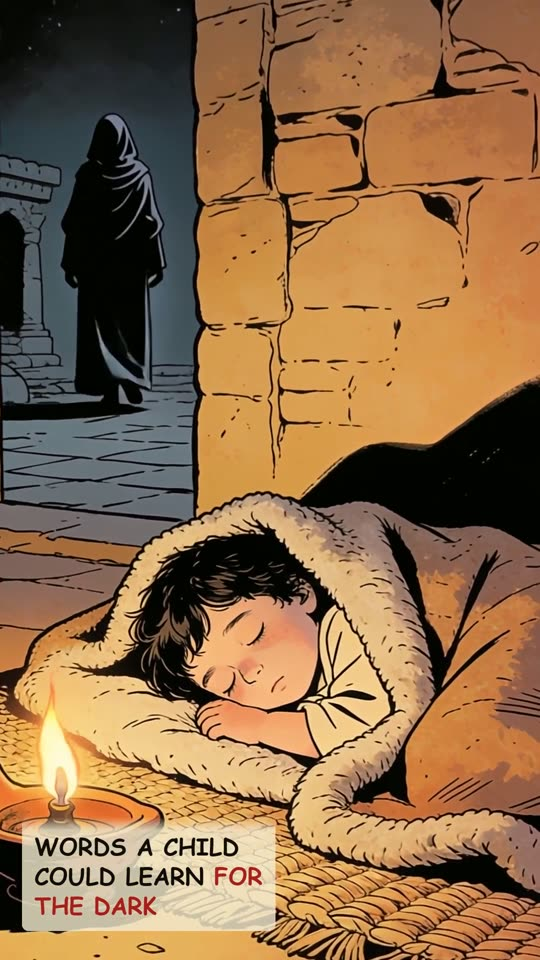

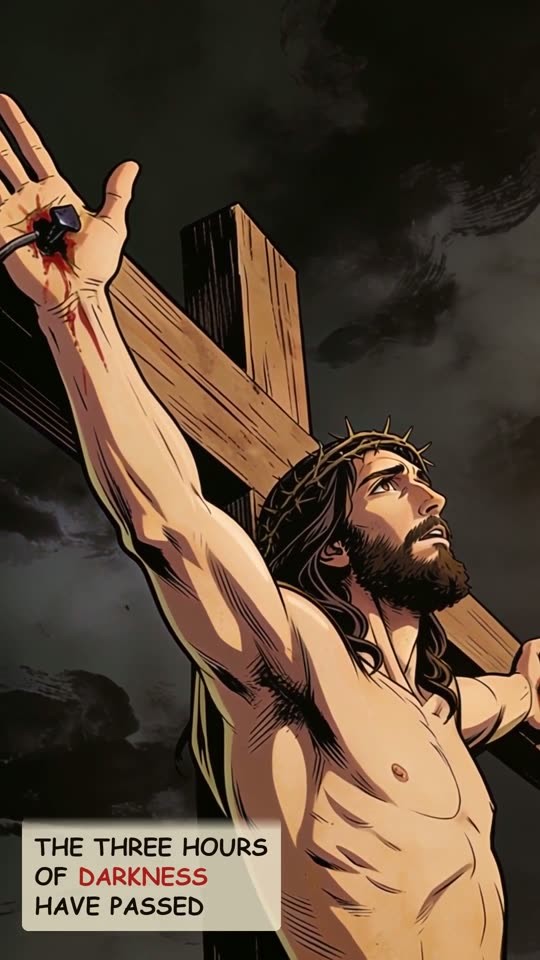
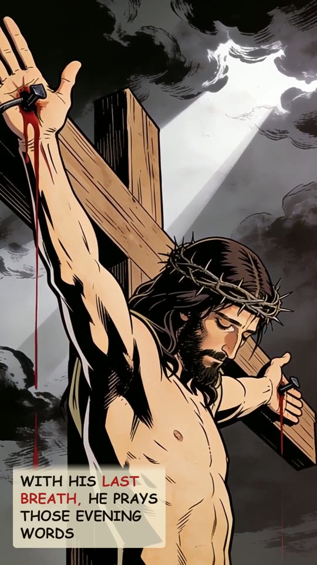
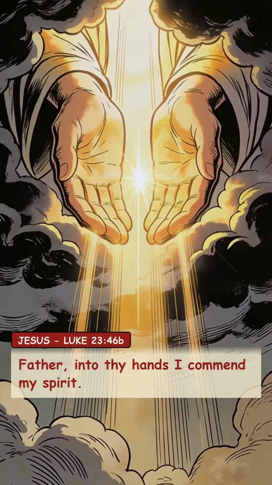
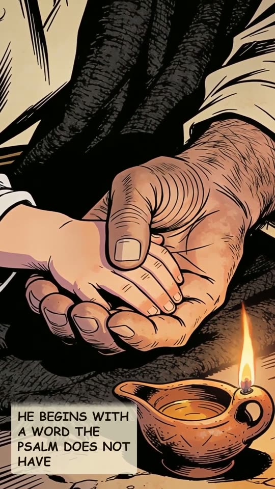
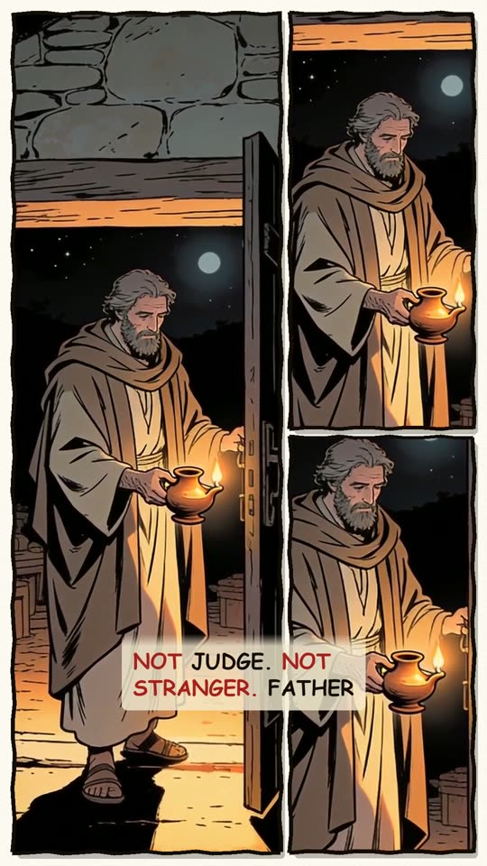
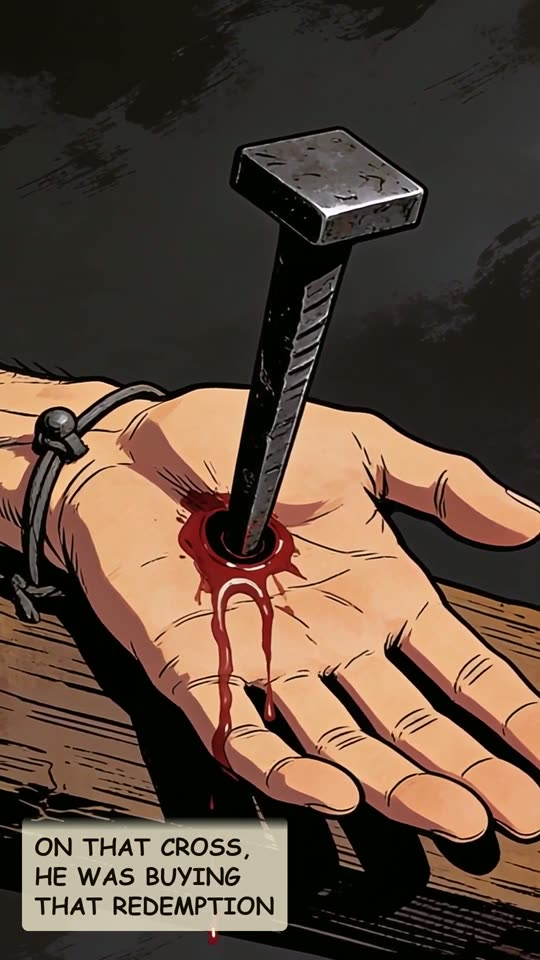
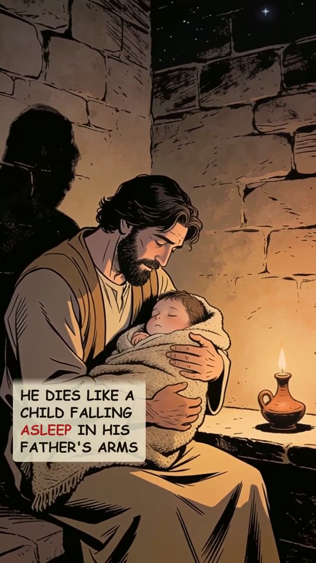
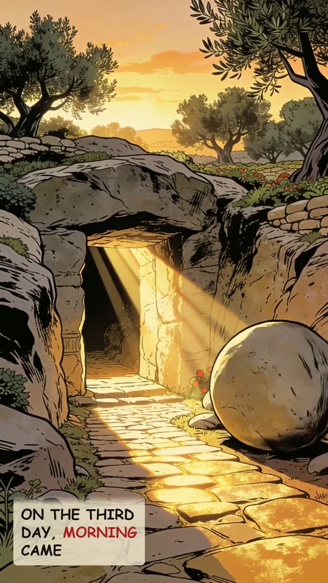
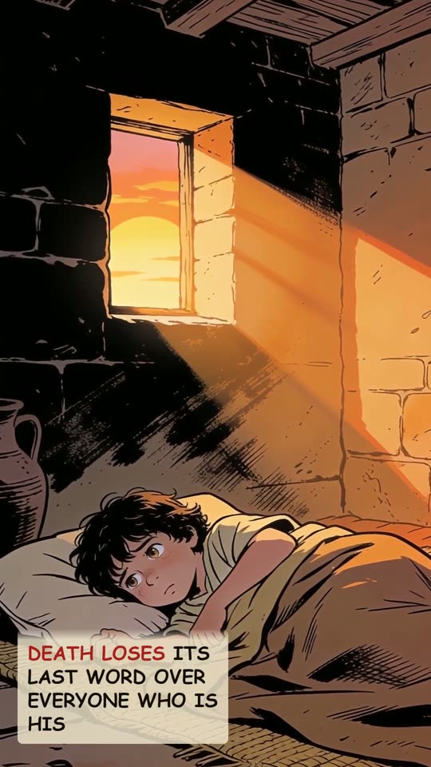
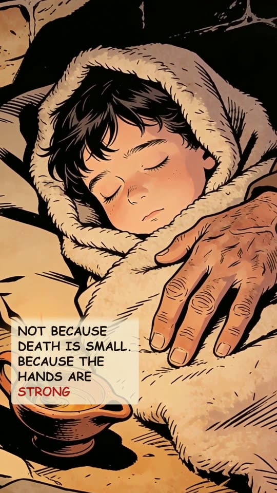
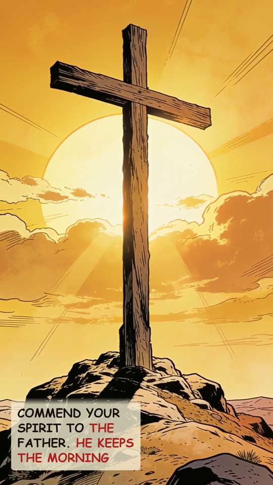
The narration
A dying man's last words. And they were a child's prayer. Jewish tradition made these words an evening prayer. Words a child could learn for the dark. Into thine hand I commit my spirit: thou hast redeemed me, O LORD God of truth. On the cross, the three hours of darkness have passed. With his last breath, he prays those evening words. Father, into thy hands I commend my spirit. He begins with a word the Psalm does not have. Father. Not judge. Not stranger. Father. The Psalm he prayed says, thou hast redeemed me. On that cross, he was buying that redemption. He dies like a child falling asleep in his father's arms. On the third day, morning came. Because he rose, death loses its last word over everyone who is his. You can close your eyes in those same hands. Not because death is small. Because the hands are strong. Commend your spirit to the Father, tonight and every night. He keeps the morning.